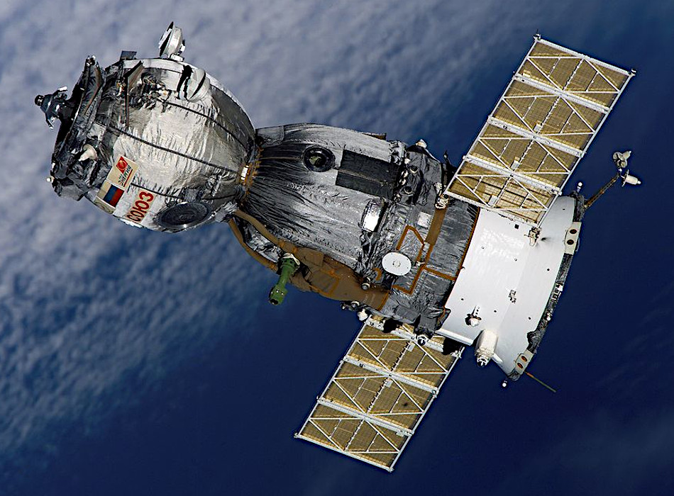
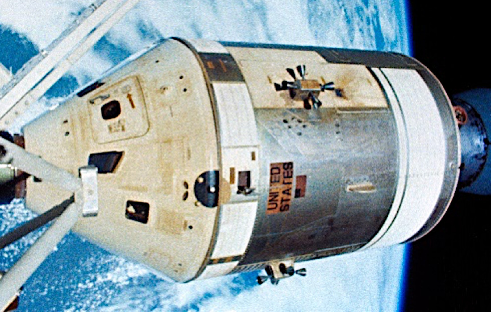
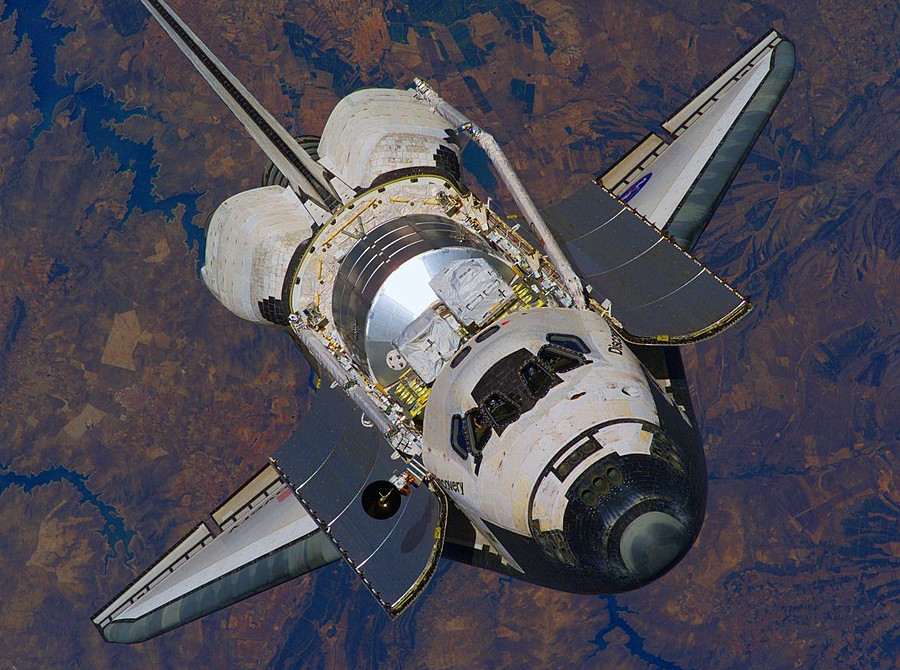
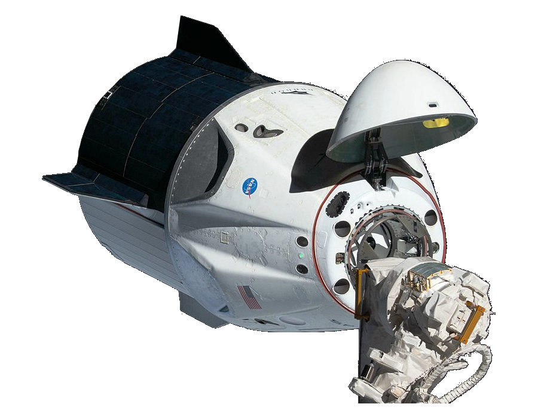
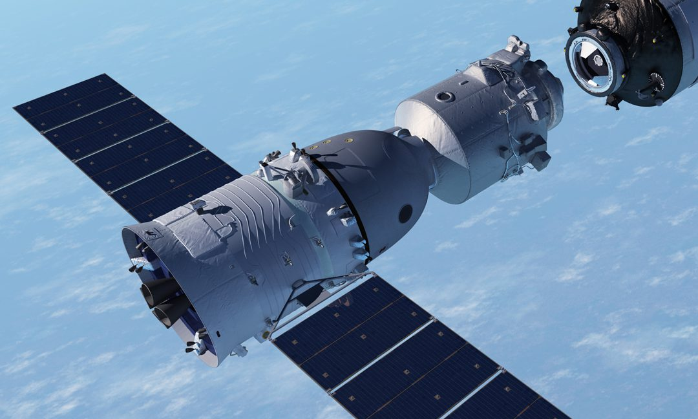

Space stations allow personnel to stay in space for longer periods than was possible using standard orbital spacecraft. There are limits, due to physical and mental factors, to the time a person can spend in confined space and low gravity. Station personnel are therefore rotated periodically, usually after about six months. These station personnel need to be safely transported to the station and back to Earth.
Station personnel transport spacecraft are therefore based on the existing proven orbital craft. Early versions were simply modified to allow docking with the station, while later craft have been extensively modified for dedicated station use.
The following spacecraft have been used to transport personnel to and from space stations:

Soyuz crew spacecraft are designed for personnel and can only carry a small amount of cargo. They use a Soviet/Russian Soyuz launcher to reach orbit and their own engines to rendezvous and dock with the station.
At least one Soyuz crew craft remains docked to the station for use as an emergency escape vehicle and to return the personnel at the end of their mission. Spacecraft will deteriorate over time in space and therefore have a designed period of safe use. Soyuz crew craft are therefore regularly replaced with a "fresh" craft of the same type even though the station personnel may remain for a longer period.
Soyuz crew craft were originally used for orbital testing and experiments. They were later used to transport personnel to and from the Soviet/Russian Salyut Space Stations, Mir Space Station and the International Space Station (ISS). Upgraded versions continue to be used for personnel transport to and from the ISS.

The Apollo command and service module (CSM) accommodated a crew of three and was originally designed for the crewed exploration and landing on our moon. Between 1969 and 1972 it was used to carry personnel and lunar modules to the moon.
The CSM functioned as a mother ship, which stayed in lunar orbit, while the lunar module carried personnel to the moon and back to the CSM. The CSM then returned the personnel to Earth.
The same design of spacecraft, without the lunar module, was used to transport personnel to the U.S. Skylab Space Station and return them to Earth. A Saturn IB launcher was used to carry the CSM to orbit. The CSM then used its own engines to rendezvous and dock with the Skylab station.

The U.S. Space Shuttle is the crewed component of the U.S. Space Transport System, or STS, which includes the Shuttle, large external fuel tank and two solid rocket boosters. The Shuttle was designed for personnel and cargo, including large station components. It used its own engines and the booster rockets to launch and its own engines for rendezvous, docking and de-orbiting to return to Earth.
Shuttles have supported the Soviet/Russian Mir station and were used extensively to build, maintain and re-supply the International Space Station (ISS).
Shuttles were only able to remained at a station for a short period. Although they were an alternative to the Russian Soyuz crew craft for delivering personnel to and from the station, they were not used as station emergency escape craft.

The SpaceX Crew Dragon Spacecraft, also called Dragon 2, was developed to transport personnel and some cargo to and from the ISS. The Dragon 2 version can also be adapted to transport cargo only to the International Space Station (ISS).
Dragon 2 is an upgraded version of the earlier SpaceX Dragon 1 spacecraft which was designed and used to carry only cargo to the ISS.
Both the crew and cargo variants of Dragon use a SpaceX Falcon 9 launcher to reach orbit and their own engines to rendezvous and dock with the station. They are both are designed to return safely to Earth with personnel or materials.

The Chinese Shenzhou Spacecraft was designed to carry personnel into orbit testing and experiments. Its main purpose is to transport personnel to and from the Chinese Tiangong space stations.
Shenzhou is a modernized version of the Soviet/Russian Soyuz crew craft with a modified larger crew compartment.
It uses a Chinese Long March launcher to reach orbit and its own engines to rendezvous with the station, dock, un-dock and de-orbit to return to Earth.
The table below lists all the spacecraft used to transport personnel to and from each station.
Text in the table body hi-lighted in gold links to another rdata space article page. These links open in a new tab. Table head remains visible during scrolling.
| Date Range | Spacecraft | ID | Launcher | Stations | Country | Notes |
| 1971-1981 | Soyuz | 7K-OKS | Soyuz, Soyuz-U | Salyut | U.S.S.R. | Used for orbital testing and Salyut stations. |
| 1973-1979 | Apollo | CSM | Saturn | Skylab | U.S. | Modified Apollo lunar craft. |
| 1980-1986 | Soyuz T | T | Soyuz-U, Soyuz-U2 | Salyut, Mir | U.S.S.R. | Used for Salyut and Mir stations. |
| 1987-2002 | Soyuz TM | TM | Soyuz-U, Soyuz-U2 | Mir, ISS | U.S.S.R., Russia | Used for Mir station and the International Space Station (ISS). |
| 1995-2011 | Space Shuttle | STS | Space Shuttle | Mir, ISS | U.S. | Used for Mir station and ISS for crew, cargo and station components. |
| 2003-2012 | Soyuz TMA | TMA | Soyuz-FG | ISS | Russia | Used for the International Space Station (ISS). |
| 2010-2016 | Soyuz TMA-M | TMA-M | Soyuz-FG | ISS | Russia | Used for the International Space Station (ISS). |
| 2012-2016 | Shenzhou | - | Long March 2F/G | Tiangong-1 & 2 | China | Used for Tiangong-1 & 2 stations. |
| 2016-2020 | Soyuz MS | MS | Soyuz-FG, Soyuz 2.1a | ISS | Russia | Used for the International Space Station (ISS). |
| 2020- | Dragon 2 Crew | Crew | Falcon 9 | ISS | U.S. | Used for the International Space Station (ISS). |
| 2021- | Shenzhou | - | Long March 2F/G | Tiangong | China | Used for Tiangong Space Station. |
{kind=link}
{kind=link}
{kind=link}
{kind=link}
{kind=link}